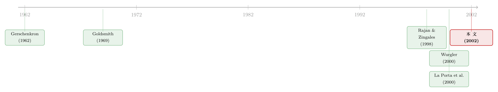

英国人发债、德国人找银行，真的决定了谁长得更快吗？
本文读的是 Beck & Levine (2002, Journal of Financial Economics)：把「一个国家到底是银行主导还是市场主导」这件争了一个多世纪的事，拿到 42 个国家、36 个产业的数据上做了一次干净的检验。结论出人意料地平淡——银行还是市场，本身并不重要；真正决定外部依赖型产业能不能长起来、新企业能不能冒出来、资本能不能流向该去的地方的，是「整体金融发展水平」和「法律对投资者的保护」。
1 一场打了一百多年的口水仗
先讲一个金融学里最古老的争论。
一边是「银行派」。Gerschenkron（1962）在研究欧洲后发国家的工业化时发现，那些落后经济体里，是大银行——而不是分散的资本市场——把储蓄一笔笔地funnel到了钢铁、铁路这些战略产业上。强大的银行能逼着企业吐露真实信息、能逼着它们老老实实还债，这是「原子化」的市场做不到的。德国、日本就是这一派的样板:一家主银行（main bank）盯着一家公司，关系深、监督紧。
另一边是「市场派」。他们说，恰恰是因为银行太强，才坏了事。Rajan（1992）有个著名的论点:银行一旦掌握了你的内部信息，就有了讨价还价的「信息租」（informational rents），它会把你项目的利润分走一大块，于是你干脆就不去做那些好项目了。Hellwig（1991）、Weinstein 和 Yafeh（1998）也都在说同一件事——银行天生是债权人，偏好保守，会把创新摁死。英美的资本市场则相反:股价里藏着千千万万投资者的判断，谁也垄断不了信息。
这就是金融学里经典的 银行主导 vs 市场主导（bank-based vs market-based） 之争。听上去像是两种「金融体制」谁更优越的宏大叙事，但它背后是一个非常具体的实证问题:给定一个国家的金融到底有多发达，它把这些金融服务「装」在银行里还是「装」在市场里，会不会改变实体经济的命运？
接着，一个自然的问题是:这事到底有没有定论？
过去一百年，这场争论几乎全靠四个国家撑着——德国和日本当「银行主导」的代表，美国和英国当「市场主导」的代表。问题是，你怎么可能从四个国家里得出关于「金融体制」的普遍结论？ 德日长得快或长得慢，可能跟它们是不是银行主导毫无关系，而是跟战后重建、产业政策、文化、运气有关。样本量只有 4，再精巧的故事也是在沙上盖楼。
Beck 和 Levine 这篇文章，干的就是把这个「N=4」的老问题，第一次搬到一个真正的跨国大样本上去检验。
2 把一个「体制问题」翻译成一个「回归问题」
但真正关键的一步，不在于「收集更多国家」，而在于怎么把这个含糊的大问题，逼成一个可以被数据证伪的小问题。
这里他们借了一把极漂亮的尺子，来自 Rajan 和 Zingales（1998，下称 RZ）。RZ 的洞见是这样的:金融体系存在的意义，是抹平「外部融资」和「内部融资」之间的价差（那道由信息和交易成本撑出来的楔子）。如果一个国家的金融体系运转良好，它会让外部融资变便宜——而这件事对谁的好处最大？ 当然是那些天生就离不开外部资金的产业，比如制药、机械，而不是那些靠自己现金流就够花的产业。
于是 RZ 给出了一个绝妙的识别设计:不去比「金融发达的国家是不是长得快」（那有太多内生性），而去比在同一个国家内部，「外部依赖度高」的产业，是不是比「外部依赖度低」的产业，在金融更发达的地方相对长得更快。这是一个差分中的差分——它把所有「国家层面」和「产业层面」的混杂因素，全用固定效应（fixed effects）吸收掉了。
Beck 和 Levine 把这把尺子接了过来，但换了一个问法。RZ 问的是「金融发展」的高低；他们问的是「金融结构」——同样发达，银行多一点还是市场多一点，重要吗？ 模型写出来是这样:
这个方程值得逐项读一遍。
Growth_{i,k} 是国家 i 产业 k 在 1980–90 年间实际增加值（value added）的年均增长率，或者新建企业数量（number of establishments）的增长。Country 和 Industry 是国家和产业的虚拟变量——注意，正因为有了它们，FD 和 FS 这两个国家层面的变量本身不能单独进回归（会被吸收掉），它们只能以「和外部依赖度的交互项」的形式出现。这恰恰是 RZ 设计的精髓:我们关心的不是金融发展的「水平效应」，而是它「偏向谁」的「斜率效应」。
External_k 是产业 k 的外部融资依赖度，用一批美国上市公司 1980–89 年的数据算出来（假设产业的技术性融资需求是全球共通的，美国市场摩擦最小、最能反映「天然」需求）。
于是，整篇论文的输赢，全压在 d_1 和 d_2 这两个系数的符号上。
3 四种世界观，四套符号预测
这是全文最聪明的地方。Beck 和 Levine 没有满足于「银行 vs 市场」的二元对立，而是把争论拆成了四种观点，并且让每一种观点都对 d_1、d_2 给出可证伪的符号预测:
- 市场主导观（market-based）:市场更会配置资本。用「市场相对银行的规模与活跃度」当 FS 时，预测
d_2 > 0（外部依赖型产业在市场化的地方长得更快）。 - 银行主导观（bank-based）:银行更会监督、更会做staged financing。同一个 FS 度量下，它预测
d_2 < 0。 - 金融服务观（financial services view）:Levine（1997）的立场——银行还是市场是二阶问题，一阶问题是金融体系到底有没有把信息和交易成本摁下去。它预测
d_1 > 0，但d_2 = 0。 - 法律与金融观（law and finance）:La Porta 等（2000）的立场——真正该分的不是「银行 vs 市场」，而是「法律保不保护外部投资者」。把 FD 换成「法律体系效率」，它预测那一项
> 0，而金融结构d_2 = 0。
你看，前两种观点打得你死我活（d_2 > 0 还是 < 0），但它们有一个共同的「敌人」:后两种观点都在说——d_2 根本就是零。
这种「先把所有对立假说翻译成同一组系数上的不同符号预测，再让数据去裁决」的写法，是实证金融里最干净的研究范式。一篇论文能不能站住，往往就看作者有没有本事把含糊的争论逼到这一步。
为了量「金融结构」，作者构造了三把尺子，每一把都对应着争论里的一个侧面:
Structure-Aggregate:Structure-Activity（=log(Value Traded / Bank Credit)，股票成交额相对银行信贷）和Structure-Size（=log(Market Capitalization / Bank Credit)，股市市值相对银行信贷）两个变量的第一主成分。值越高，越「市场主导」。- 银行业的监管限制:用 Barth 等（2001）的数据，衡量银行在证券、保险、房地产业务以及持有非金融企业上受到的管制——管制越松，银行「权力」越大，越偏「银行主导」。
- 银行的国有化程度:用 La Porta 等（2002）的指标，即一国最大十家银行中政府持股的比例。
最后，为了对付内生性（金融发展可能是经济增长的「果」而非「因」），作者跑的是 两阶段最小二乘（two-stage least squares, TSLS），用 法律渊源（legal origin） 和 宗教构成 当工具变量——因为一个国家的英美法系/法德斯堪的纳维亚民法系，大多是殖民和占领的历史遗产，相对于今天的增长可视作外生。
4 反转:谁也没赢，又好像谁都赢了
然后，反转出现了。
把三把「金融结构」尺子一一塞进 d_2，无论是产业增长、还是拆出来的「新建企业数量」增长，d_2 都没有稳健地区别于零。市场主导观期待的 d_2 > 0 没有出现，银行主导观期待的 d_2 < 0 也没有出现。换一种 FS 度量、换一组工具变量、把样本限制在欠发达经济体（这本该是 Gerschenkron 银行主导论最有底气的地方）——结论纹丝不动:一个国家是银行主导还是市场主导，对实体产业的命运，per se 不重要。
作者甚至顺手做了两个延伸检验，把 RZ 的「外部依赖度」换成产业的 研发密集度（R&D intensity） 和 劳动密集度（labor intensity）:理论上，市场该偏爱创新型产业，国有银行该偏爱劳动密集型产业。结果同样令人扫兴——金融结构和这两类产业的表现之间，也没有强联系。
但故事没有停在「什么都不重要」。真正重要的东西，在 d_1 那一项里亮了起来:
- 外部依赖型产业，在整体金融发展（FD）更高的经济体里，确实长得更快——
d_1 > 0且显著。这一项支持「金融服务观」。 - 把 FD 换成法律体系对投资者的保护效率，那一项同样显著为正——这支持「法律与金融观」。
- 而且这种助力不只体现在「企业变大」，更体现在「新企业冒出来」:金融发展和良好的法律环境，显著地推高了外部依赖型产业里新建企业数量的增长。
顺带一提，方程里那个控制收敛效应的 g——「初始份额大的产业长得慢」——如作者所料，在大多数回归里显著为负，和 RZ 当年的发现一致，算是给整个识别设计上了一道可信度的保险。
接着是第二套方法论。作者用 Wurgler（2000）的「投资弹性」来量资本配置效率——它衡量一个国家在多大程度上「往成长的产业加投资、从衰退的产业撤投资」。在 39 个国家的纯跨国回归里:
$$\text{Elasticity}_i = \delta_0 + \delta_1\,\text{FD}_i + \delta_2\,\text{FS}_i + \varepsilon_i$$
结论再一次复读:控制住整体金融发展之后，金融结构 δ_2 解释不了各国资本配置效率的差异。
于是全文落到一句话上:金融体系是用银行还是用市场来递送金融服务，并不要紧；要紧的是这个体系发不发达、这个国家的法律保不保护投资者。 银行 vs 市场之争，吵了一百年，可能从一开始就问错了问题。
5 文献脉络
把这条线索捋一捋，会看到一个很漂亮的「问题被逐步改造」的过程。
最早，Gerschenkron（1962）和 Goldsmith（1969）确立了「金融结构关乎增长」这个直觉，但他们手里只有少数几个国家的历史叙事。真正的方法论突破来自 Rajan 和 Zingales（1998）——他们用「外部依赖度 × 金融发展」的交互项，把「金融→增长」这个充满内生性的命题，第一次做成了可识别的产业层面回归。几乎同时，Levine 和 Zervos（1998）证明银行信贷和股市流动性都独立地预测后续增长，暗示「二选一」可能是个伪命题。

接着，争论分出了两条新支流。一条是 La Porta 等（2000）的「法律与金融」——他们主张，与其纠结银行还是市场，不如去看法律渊源如何决定投资者保护，进而决定金融发展（关于法律与禀赋如何在三百年尺度上塑造金融，可参见《法律是行李，风土是地基》）。另一条是 Wurgler（2000）给出的「投资弹性」，把「金融好不好」从增长率落到了更微观的「资本配置效率」上。
Beck 和 Levine（2002）站在这两条支流的交汇处，把 RZ 的产业面板和 Wurgler 的跨国回归并到一起，对四种观点做了一次总裁决。它和同期两篇姊妹作互为印证:Levine（2000）在 GDP 增长的框架里发现金融结构不是好的预测变量；Demirgüç-Kunt 和 Maksimovic（2002）用企业层面数据得到同样的结论（这篇企业层面的姊妹作，参见《英国人发债、德国人找银行，真的重要吗？》）。Beck 和 Levine 的独特贡献，是补上了「新企业形成」和「产业层面资本配置」这两个被理论反复强调、却一直缺实证的渠道。
至于「为什么英美会演化出市场主导、德日会演化出银行主导」这个上游问题——它本身又是另一条研究线（参见《为什么英国人发债，德国人却找银行？》）。本文的潜台词恰恰是:这个「为什么」也许在政治经济学上很迷人，但在「谁长得更快」的意义上，没那么重要。
6 评论与延伸（Q&A + 研究方向）
(a) 几个可能的疑问
Q：「金融结构不重要」和「金融发展很重要」会不会其实是同一回事，只是度量没分干净？
这是最该担心的一点。
Structure-Activity的分子分母都和金融发展正相关，作者用「比值」（市场 / 银行）来剥离发展水平、只留结构信息，并在回归里同时放入 FD 项和 FS 项，让 FD 去吸收「发展」、FS 只剩「结构」。但比值法是否真能把两者切干净，仍是这类研究永远的软肋。
Q：用美国数据算出来的「外部依赖度」，凭什么能套到孟加拉、智利头上？
这是 RZ 方法论的核心假设:产业的外部融资需求是技术决定的、全球共通的，美国只是「摩擦最小、最接近天然需求」的标尺。它当然可能被违反（同一产业在不同国家的技术形态未必一样），但好处是——这个度量对各国金融结构是外生的，正是识别所需要的。
Q：一个「零结果」（null result），凭什么发 JFE？
因为它是一个有约束力的零。作者不是没找到效应就收手，而是把四种对立假说逼成精确的符号预测，再用三把不同的 FS 尺子、两套方法论、TSLS、子样本，反复证明
d_2顶不起来。当一个被争论了一个世纪的命题被这样系统地证伪，它本身就是强结论。
Q：会不会是欠发达国家里银行主导才真正管用，被大样本平均掉了？
作者专门查了这条 Gerschenkron 式的猜想——把样本限制在欠发达经济体——依然没找到「银行主导对工业增长或新企业形成特别重要」的证据。这一步堵掉了最有说服力的反驳。
Q：法律渊源当工具变量，排他性约束（exclusion restriction）站得住吗？
这是 La Porta 一系实证共同的命门。法律渊源被当作外生（殖民史遗产），且只通过「投资者保护→金融发展」影响增长。但批评者会问:法律渊源也可能通过产权、合同执行、政府质量等别的渠道直接影响产业增长，那就破坏了排他性。作者补做了「只用法律渊源」的回归，结论类似，但工具有效性仍只能是一个无法完全检验的信念。
Q：这是不是意味着政策上「银行还是市场」可以随便选？
不能这么读。文章说的是「在既有金融发展水平下，结构的边际贡献近零」，而不是「结构无所谓」。如何达到高金融发展、如何建立有效的投资者保护，可能本身就和一国走银行路线还是市场路线纠缠在一起——本文识别的是「条件相关」，不是「无条件可替代」。
(b) 几个可能的研究问题与提案
1. 把「金融结构无关论」搬到公司债市场
【经济故事】Beck-Levine 比较的是「股市 vs 银行信贷」，但夹在中间的公司债市场几乎缺席。一个国家是靠银行、靠债市、还是靠股市给外部依赖型产业供血，会不会在「企业违约时的处置效率」上分出高下？债市的分散债权人和银行的集中债权人，在危机里的行为天差地别。 【可行性】中。需要跨国公司债发行与违约数据（如 Dealogic、Moody's），识别上可沿用 RZ 的「外部依赖度 × 债市深度」交互项。难点是债市深度的内生性，工具变量比股市更难找。
2. 外资持有人会不会「绕过」金融结构？
【经济故事】如果本文成立——结构不重要、发展和法律才重要——那么外国资本的进入可能正是「绕过本国落后结构」的一条捷径:一个银行主导但银行很弱的国家，外资证券投资能不能直接把外部依赖型产业的融资约束松开？ 【可行性】中高。可用 IMF/EPFR 的跨国资本流数据，结合「资本账户开放」的自然实验（某年某国对外资开放某些行业），做 RZ 框架下的三重差分。和本博客已有的外资持有人议题（如《外资真是「蝗虫」吗？》）天然衔接。
3. 用近二十年的数据重做一遍:金融科技改变结论了吗？
【经济故事】本文样本停在 1990 年。此后金融科技、影子银行、直接贷款（direct lending）模糊了「银行 vs 市场」的边界。当「市场化的银行信贷」（贷款证券化、CLO）大行其道，原来的 FS 度量还区分得了什么吗？也许结构的「不重要」会变得更不重要，也许会以新形态复活。 【可行性】高。数据现成（World Bank Global Financial Development Database 已把 Beck-Levine 的指标更新到今天），方法论可直接平移，是一个低风险、高确定性的复制+延伸。
4. 把「资本配置效率」从产业层面下沉到企业层面
【经济故事】Wurgler 的弹性是产业层面的「往成长产业加投资」。但配置错误（misallocation）的真正战场在企业之间——同一产业里，钱有没有从低效企业流向高效企业？金融结构会不会在这个更细的颗粒度上重新变得重要？ 【可行性】中。需要企业层面的全要素生产率与投资数据（Compustat Global、Orbis），可借鉴 Hsieh-Klenow 的错配测度，再回归到金融结构上。识别仍受内生性困扰，但颗粒度的提升本身就有价值。
7 我的判断
这篇文章的贡献，不在于它「发现」了什么，而在于它干净地否定了什么。它把一个被叙事和案例支配了一个世纪的争论，第一次拽到了可证伪的实证轨道上，并用一种近乎冷酷的系统性，证明了「银行 vs 市场」这个二元框架的边际信息量接近于零。能把一个错误的问题正式宣判出局，本身就是一流的学术服务。它和 Levine（2000）、Demirgüç-Kunt-Maksimovic（2002）三篇互相咬合，构成了「金融结构无关论」的实证三角，影响了此后整整一代关于金融与增长的讨论——重点从此转向「金融发展的水平」和「投资者保护的制度」。
但我对识别有两点保留。
其一，所有结论都站在工具变量的肩膀上。法律渊源和宗教是否真的只通过金融发展影响产业增长，是一个无法被数据检验、只能被论证的信念；一旦排他性被怀疑，d_1 的因果解读和 d_2 的「零」就都要打折扣。其二，「零结果」对统计功效（power）极其敏感。d_2 不显著，究竟是「结构真的不重要」，还是「跨国数据噪声太大、本就估不准一个二阶效应」？作者用稳健性检验筑了很高的墙，但「估不出」和「不存在」在计量上始终难以彻底分开。
后续我最想看到的，是把这套检验放到「危机」这面照妖镜下。本文比较的是 1980–90 年这段相对平静期的「平均增长」。但银行主导和市场主导真正分野的时刻，往往不在平时，而在信用紧缩和企业违约处置的当口——那正是集中债权人（银行）和分散债权人（市场）行为最不一样的地方。如果「结构无关论」在危机样本里依然成立，它才算真正经受住了考验;如果不成立，那这篇文章漂亮的「零」，或许只是因为它恰好量在了风平浪静的年份。
参考文献
- Beck, T., Levine, R. (2002). Industry growth and capital allocation: does having a market- or bank-based system matter? Journal of Financial Economics 64(2), 147–180.
- Demirgüç-Kunt, A., Maksimovic, V. (2002). Funding growth in bank-based and market-based financial systems: evidence from firm level data. Journal of Financial Economics, forthcoming.
- Gerschenkron, A. (1962). Economic Backwardness in Historical Perspective. A Book of Essays. Harvard University Press, Cambridge, MA.
- Goldsmith, R. W. (1969). Financial Structure and Development. Yale University Press, New Haven.
- Hellwig, M. (1991). Banking, financial intermediation, and corporate finance. In: Giovanni, A., Mayer, C. (Eds.), European Financial Integration. Cambridge University Press, pp. 35–63.
- La Porta, R., Lopez-de-Silanes, F., Shleifer, A., Vishny, R. W. (2000). Investor protection and corporate governance. Journal of Financial Economics 58, 3–29.
- La Porta, R., Lopez-de-Silanes, F., Shleifer, A. (2002). Government ownership of commercial banks. Journal of Finance 57, 265–301.
- Levine, R. (1997). Financial development and economic growth: views and agenda. Journal of Economic Literature 35, 688–726.
- Levine, R. (2000). Bank-based or market-based financial systems: which is better? Unpublished working paper, University of Minnesota.
- Levine, R., Zervos, S. (1998). Stock markets, banks, and economic growth. American Economic Review 88, 537–558.
- Rajan, R. G. (1992). Insiders and outsiders: the choice between informed and arm's length debt. Journal of Finance 47, 1367–1400.
- Rajan, R. G., Zingales, L. (1998). Financial dependence and growth. American Economic Review 88, 559–586.
- Stiglitz, J. E. (1985). Credit markets and the control of capital. Journal of Money, Credit and Banking 17, 133–152.
- Weinstein, D. E., Yafeh, Y. (1998). On the costs of a bank-centered financial system: evidence from the changing main bank relations in Japan. Journal of Finance 53, 635–672.
- Wurgler, J. (2000). Financial markets and the allocation of capital. Journal of Financial Economics 58, 187–214.